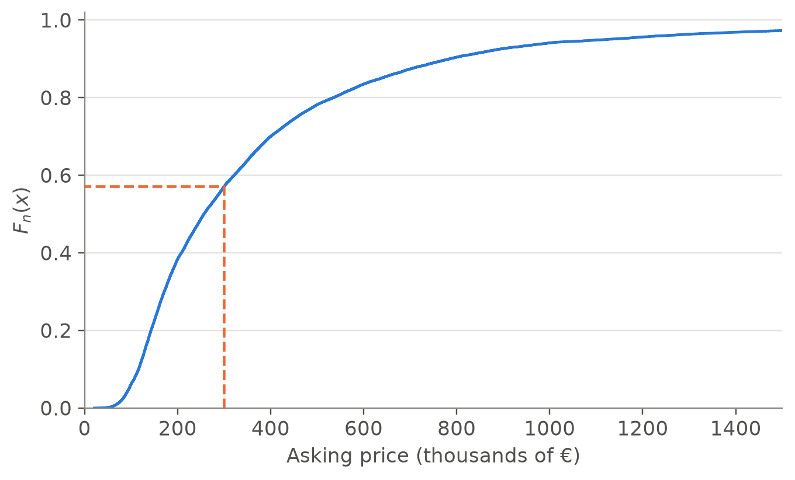
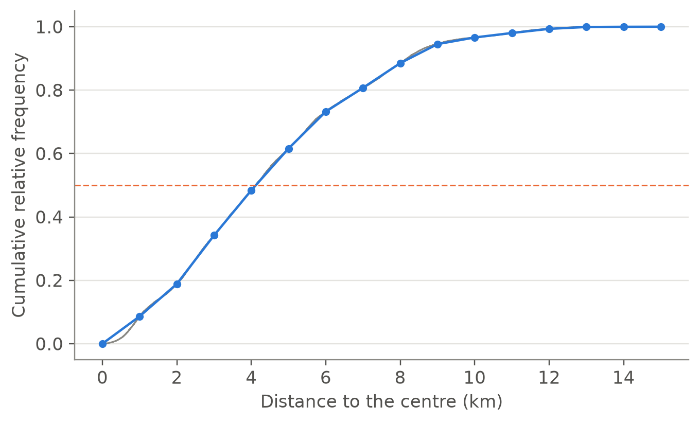

listings = pl.read_csv("data/processed/idealista/madrid_listings_2018.csv").select(
"listing_id", "district", "zone", "condition",
"price", "price_m2", "area_m2", "bedrooms", "bathrooms",
"floor", "lift", "terrace", "construction_year", "dist_centre_km",
)2.2 The empirical distribution, centre and position
Graphs show the whole distribution. Summary measures condense it into a few numbers that describe its centre, its spread and its shape. This part introduces the empirical distribution function, which contains all the information of the data, and the measures of centre and position; the next part covers dispersion and shape. We continue with the Madrid listings.
Notation. For data \(x_1, \dots, x_n\) we write \(x_{(1)} \le x_{(2)} \le \dots \le x_{(n)}\) for the same values sorted in increasing order, the order statistics. Thus \(x_{(1)}\) is the minimum and \(x_{(n)}\) the maximum.
The empirical distribution function
Definition 1 (Empirical distribution function) The empirical distribution function of \(x_1, \dots, x_n\) is the function \(F_n : \mathbb{R} \to [0, 1]\), \[ F_n(x) = \frac{1}{n}\,\#\{i : x_i \le x\}, \] the proportion of observations less than or equal to \(x\).
It extends the cumulative frequencies \(F_i\) of part 1 to every real number \(x\), and does not require grouping the data.
Proposition 1 (Properties of the empirical distribution function)
- \(F_n\) is non-decreasing, \(F_n(x) = 0\) for \(x < x_{(1)}\) and \(F_n(x) = 1\) for \(x \ge x_{(n)}\).
- \(F_n\) is a step function: it is constant between consecutive distinct values, and at each observed value \(v\) it jumps by the relative frequency of \(v\).
- For \(a < b\), the proportion of observations in \((a, b]\) is \(F_n(b) - F_n(a)\).
Proof. If \(x \le y\), every observation with \(x_i \le x\) also satisfies \(x_i \le y\), so the count defining \(F_n(x)\) cannot exceed that of \(F_n(y)\). No observation is below \(x_{(1)}\) and all are at most \(x_{(n)}\), which gives the values 0 and 1. The set \(\{i : x_i \le x\}\) only changes when \(x\) reaches an observed value \(v\), and then it gains the observations equal to \(v\), which proves 2. Finally, \(\{i : x_i \le b\}\) is the disjoint union of \(\{i : x_i \le a\}\) and \(\{i : a < x_i \le b\}\), so the counts add up, which proves 3.
price_sorted = np.sort(listings["price"].to_numpy())
n = len(price_sorted)
F300 = np.mean(price_sorted <= 300_000)
fig, ax = plt.subplots()
ax.step(price_sorted / 1000, np.arange(1, n + 1) / n, where="post", color=COLORS["blue"])
ax.plot([300, 300, 0], [0, F300, F300], ls="--", color=COLORS["orange"])
ax.set_xlim(0, 1_500)
ax.set_ylim(0, 1.02)
ax.set_xlabel("Asking price (thousands of €)")
ax.set_ylabel("$F_n(x)$")
plt.show()
print(f"F_n(300,000) = {F300:.3f}")
F_n(300,000) = 0.571About 57 % of the listings ask for 300,000 € or less. The empirical distribution function answers any question of this kind without grouping, and it is the basis of the quantiles defined below. With 75,735 observations the steps are too small to see, and \(F_n\) looks like a continuous curve: steep where the data are concentrated, flat in the tail.
Measures of centre
Definition 2 (Mean, median and mode)
- The mean is \(\displaystyle \bar{x} = \frac{1}{n}\sum_{i=1}^{n} x_i\).
- The median is the central value of the ordered data: \(Me = x_{((n+1)/2)}\) if \(n\) is odd, and \(Me = \frac12\big(x_{(n/2)} + x_{(n/2+1)}\big)\) if \(n\) is even.
- The mode is the most frequent value (or category).
listings.select(
mean=pl.col("price").mean(),
median=pl.col("price").median(),
)| mean | median |
|---|---|
| 388,892.1 | 257,000.0 |
The mean (about 389,000 €) is much larger than the median (257,000 €): a few very expensive dwellings pull the mean upwards but hardly affect the median. Half of the listings ask for less than 257,000 €, and the mean is above what most of them ask.
Properties of the mean and the median
Proposition 2 (Least-squares property of the mean) For any data \(x_1, \dots, x_n\):
- \(\sum_{i=1}^n (x_i - \bar x) = 0\): the deviations from the mean cancel out.
- For every \(c \in \mathbb{R}\), \(\displaystyle \sum_{i=1}^n (x_i - c)^2 = \sum_{i=1}^n (x_i - \bar x)^2 + n(\bar x - c)^2 .\)
Hence the mean is the unique value \(c\) that minimises \(\sum_i (x_i - c)^2\).
Proof.
\(\sum_i (x_i - \bar x) = \sum_i x_i - n\bar x = n\bar x - n\bar x = 0\).
Add and subtract \(\bar x\): \(x_i - c = (x_i - \bar x) + (\bar x - c)\). Squaring and adding, \[ \sum_i (x_i - c)^2 = \sum_i (x_i - \bar x)^2 + 2(\bar x - c)\sum_i (x_i - \bar x) + n(\bar x - c)^2, \] and the middle term is zero by 1. The last term is non-negative and vanishes only for \(c = \bar x\).
The “add and subtract, expand, the cross term vanishes” argument of this proof is the most frequent proof in statistics: it reappears in the decomposition of the variance into groups (part 3), in regression and in analysis of variance.
Proposition 3 (The median minimises the sum of absolute deviations) For any data, a median \(Me\) satisfies \(\sum_i |x_i - Me| \le \sum_i |x_i - c|\) for every \(c \in \mathbb{R}\).
Proof. The function \(g(c) = \sum_i |x_i - c|\) is continuous and piecewise linear. On an interval that contains no observation, moving \(c\) to the right by \(\delta > 0\) increases by \(\delta\) the distance to each observation on its left and decreases by \(\delta\) the distance to each one on its right, so the slope of \(g\) is \[ \#\{i : x_i < c\} - \#\{i : x_i > c\}. \] For \(c\) below the median at least half of the observations are above \(c\), so the slope is \(\le 0\); for \(c\) above the median it is \(\ge 0\). Hence \(g\) decreases up to the median and increases after it, and attains its minimum there.
The two propositions say what each measure is best at: the mean is the best single value when errors are penalised by their square, and the median when they are penalised by their absolute value. Squares penalise large errors heavily, which is why the mean follows the extreme observations.
CautionRobustness: mean versus median
What happens if we add a single listing, a palace for sale at 100 million €?
price_with_palace = pl.concat([listings["price"], pl.Series([100_000_000.0])])
pl.DataFrame({
"measure": ["mean", "median"],
"original": [listings["price"].mean(), listings["price"].median()],
"with the palace": [price_with_palace.mean(), price_with_palace.median()],
})| measure | original | with the palace |
|---|---|---|
| mean | 388,892.1 | 390,207.4 |
| median | 257,000.0 | 257,000.0 |
Even among more than 75,000 listings, one observation raises the mean by about 1,300 €, while the median does not move. In general, changing a single observation by an amount \(\Delta\) changes the mean by \(\Delta / n\), with no limit, while the median can only move to a neighbouring order statistic. This is why housing and income statistics often report the median rather than the mean.
Weighted means and means of groups
Definition 3 (Weighted mean) Given weights \(w_1, \dots, w_n \ge 0\) with \(\sum_i w_i > 0\), the weighted mean is \(\displaystyle \bar x_w = \frac{\sum_{i=1}^n w_i x_i}{\sum_{i=1}^n w_i}\).
Proposition 4 (Mean of a union of groups) If the \(n\) observations are divided into \(G\) groups with sizes \(n_1, \dots, n_G\) and means \(\bar x_1, \dots, \bar x_G\), then \(\displaystyle \bar x = \sum_{g=1}^G \frac{n_g}{n}\,\bar x_g\): the overall mean is the mean of the group means weighted by the group sizes.
Proof. The sum of the observations of group \(g\) is \(n_g \bar x_g\), so \(\bar x = \frac1n\sum_g n_g \bar x_g\).
by_zone = listings.group_by("zone").agg(n_g=pl.len(), mean_g=pl.col("price").mean())
by_district = listings.group_by("district").agg(mean_g=pl.col("price").mean())
print(f"Overall mean : {listings['price'].mean():,.0f} €")
print(f"Weighted mean of the zone means : "
f"{(by_zone['n_g'] * by_zone['mean_g']).sum() / by_zone['n_g'].sum():,.0f} €")
print(f"Simple mean of the 21 district means: {by_district['mean_g'].mean():,.0f} €")Overall mean : 388,892 €
Weighted mean of the zone means : 388,892 €
Simple mean of the 21 district means: 349,573 €The simple mean of the district means gives each district the same weight, whatever its number of listings, and does not equal the overall mean.
TipExample: what is “the” price per m² of a market?
The mean of price_m2 gives the same weight to a studio and to a mansion. A housing market is often summarised instead by the total value over the total area, \(\sum_i p_i / \sum_i a_i\). Writing \(r_i = p_i / a_i\) for the price per m² of dwelling \(i\), \[
\frac{\sum_i p_i}{\sum_i a_i} = \sum_i \frac{a_i}{\sum_j a_j}\, r_i ,
\] a mean of the prices per m² weighted by the areas:
listings.select(
simple_mean=pl.col("price_m2").mean(),
area_weighted=pl.col("price").sum() / pl.col("area_m2").sum(),
)| simple_mean | area_weighted |
|---|---|
| 3,636.3 | 3,880.4 |
The two answers differ because large dwellings, concentrated in the expensive districts, ask more per m². Neither is wrong: they answer different questions (the typical listing or the market as a whole), and a report must say which one it uses.
Grouped data
When only a frequency table with classes is available, as in many official publications, the individual values are unknown. The usual approximation assumes that all the observations of a class are at its class mark \(x_i\), which gives \(\bar x \approx \sum_i f_i x_i\). For the distance to the centre, grouped in classes of 1 km:
dist_table = (
listings
.with_columns(lower=pl.col("dist_centre_km").floor())
.group_by("lower").agg(n_i=pl.len()).sort("lower")
.with_columns(mark=pl.col("lower") + 0.5, f_i=pl.col("n_i") / pl.col("n_i").sum())
.with_columns(F_i=pl.col("f_i").cum_sum())
)
print(f"Mean from the classes: {(dist_table['f_i'] * dist_table['mark']).sum():.3f} km")
print(f"Exact mean : {listings['dist_centre_km'].mean():.3f} km")Mean from the classes: 4.475 km
Exact mean : 4.475 kmThe error is small because the classes are narrow. A table with an open last class (“1 million € or more”) has no class mark for that class, and the grouped mean cannot be computed without an assumption about it. For grouped data the modal class is the one with the greatest density \(f_i / a_i\), which coincides with the most frequent class only when all the widths are equal.
Measures of position: quantiles
Definition 4 (Quantile) The quantile of order \(p \in (0, 1)\) is \[ Q_p = \min\{x : F_n(x) \ge p\}, \] the smallest observed value that leaves at least a proportion \(p\) of the data at or below it. Special cases are the quartiles \(Q_{0.25}\), \(Q_{0.5}\) and \(Q_{0.75}\), and the percentiles \(P_k = Q_{k/100}\).
For even \(n\), this definition gives \(Q_{0.5} = x_{(n/2)}\), while Definition 2 averages the two central values: any value between them leaves half of the data on each side, and both conventions are used. With finite data the definition also produces jumps, and software often smooths it by linear interpolation between order statistics: with \(h = 1 + (n-1)p\), \[
Q_p = x_{(\lfloor h \rfloor)} + \big(h - \lfloor h \rfloor\big)\big(x_{(\lfloor h \rfloor + 1)} - x_{(\lfloor h \rfloor)}\big).
\] This is the default of NumPy, R and Excel; Hyndman and Fan (1996) compare nine such conventions. Polars uses interpolation="nearest" unless told otherwise. With large data the differences are negligible:
listings.select(
[pl.col("price").quantile(p, interpolation="linear").alias(f"Q_{p}")
for p in [0.10, 0.25, 0.50, 0.75, 0.90]]
)| Q_0.1 | Q_0.25 | Q_0.5 | Q_0.75 | Q_0.9 |
|---|---|---|---|---|
| 116,000.0 | 157,000.0 | 257,000.0 | 456,000.0 | 785,000.0 |
A quarter of the listings ask for less than 157,000 €, and a quarter for more than 456,000 €; only one in ten asks for more than 785,000 €.
Proposition 5 (Quantiles and monotone transformations) If \(g\) is strictly increasing and \(y_i = g(x_i)\), then \(Q_p(y) = g\big(Q_p(x)\big)\) for every \(p\). The mean has this property only for linear transformations \(g(x) = a + bx\).
Proof. A strictly increasing \(g\) preserves the order, so \(x_i \le x\) if and only if \(g(x_i) \le g(x)\), and \(F_n^{y}(g(x)) = F_n^{x}(x)\). The smallest observed \(x\) with \(F_n^{x}(x) \ge p\) is therefore mapped to the smallest observed \(y\) with \(F_n^{y}(y) \ge p\). For the mean, \(\frac1n\sum(a + bx_i) = a + b\bar x\); the counterexample below shows that it fails for the logarithm.
log_price = listings["price"].log()
print(f"median of log(price) = {log_price.median():.4f} "
f"log(median price) = {np.log(listings['price'].median()):.4f}")
print(f"mean of log(price) = {log_price.mean():.4f} "
f"log(mean price) = {np.log(listings['price'].mean()):.4f}")median of log(price) = 12.4568 log(median price) = 12.4568
mean of log(price) = 12.5436 log(mean price) = 12.8711This is why the median and the quantiles are the natural summaries of ordinal variables (Stevens’ scales of Topic 1): they do not change their meaning under any relabelling that preserves the order.
Quantiles of grouped data
If only classes are known, we assume that the observations are spread uniformly within each class. The cumulative frequency is then a polygon, the ogive, joining the points \((L_i, F_i)\), and the quantile is read off it by linear interpolation: if class \(i\), \([L_{i-1}, L_i)\), is the first with \(F_i \ge p\), \[ Q_p \approx L_{i-1} + \frac{p - F_{i-1}}{f_i}\, a_i . \tag{1}\]
p = 0.5
row = dist_table.with_columns(F_prev=pl.col("F_i").shift(1, fill_value=0.0)) \
.filter(pl.col("F_i") >= p).row(0, named=True)
median_grouped = row["lower"] + (p - row["F_prev"]) / row["f_i"] * 1.0
x_sorted = np.sort(listings["dist_centre_km"].to_numpy())
fig, ax = plt.subplots()
ax.step(x_sorted, np.arange(1, len(x_sorted) + 1) / len(x_sorted), where="post",
color=COLORS["grey"], linewidth=1)
ax.plot(np.r_[0, dist_table["lower"] + 1], np.r_[0, dist_table["F_i"]], "o-",
color=COLORS["blue"], markersize=4)
ax.axhline(p, color=COLORS["orange"], ls="--", linewidth=1)
ax.set_xlabel("Distance to the centre (km)")
ax.set_ylabel("Cumulative relative frequency")
plt.show()
print(f"Median from the classes: {median_grouped:.3f} km "
f"exact median: {listings['dist_centre_km'].median():.3f} km")
Median from the classes: 4.122 km exact median: 4.114 kmThe geometric mean
For positive data, the geometric mean is \[ G = \Big(\prod_{i=1}^n x_i\Big)^{1/n} = \exp\Big(\frac1n\sum_{i=1}^n \log x_i\Big), \] the mean computed on the logarithmic scale and brought back. It is the right mean for quantities that combine by multiplication, such as growth rates (Topic 5).
Proposition 6 (Inequality of the arithmetic and geometric means) For positive data, \(G \le \bar x\), with equality if and only if all the \(x_i\) are equal.
Proof. We use the inequality \(\log t \le t - 1\) for \(t > 0\), with equality only at \(t = 1\) (the line \(t - 1\) is tangent to the concave function \(\log t\) at \(t = 1\)). With \(t = x_i / \bar x\), \[ \frac1n\sum_i \log\frac{x_i}{\bar x} \le \frac1n\sum_i\Big(\frac{x_i}{\bar x} - 1\Big) = 0, \] so \(\log G - \log \bar x \le 0\). Equality requires \(x_i / \bar x = 1\) for every \(i\).
listings.select(
arithmetic=pl.col("price").mean(),
geometric=pl.col("price").log().mean().exp(),
median=pl.col("price").median(),
)| arithmetic | geometric | median |
|---|---|---|
| 388,892.1 | 280,307.5 | 257,000.0 |
For right-skewed data such as prices, the geometric mean is much closer to the median than the arithmetic mean is.
NoteHistorical note: the median
In 1774 Pierre-Simon Laplace showed that, to combine several discordant observations, the value that minimises the expected absolute error is the median of their distribution, the probabilistic version of Proposition 3. The idea remained marginal for a century, while astronomers and geodesists used the mean, which minimises squared errors and is easier to compute. It was Francis Galton who popularised the median, and the English word, in the 1880s, as a summary of skewed data that was easy to obtain by simply ranking the observations.
References
Hyndman, Rob J., and Yanan Fan. 1996. “Sample Quantiles in Statistical Packages.” The American Statistician 50 (4): 361–65.